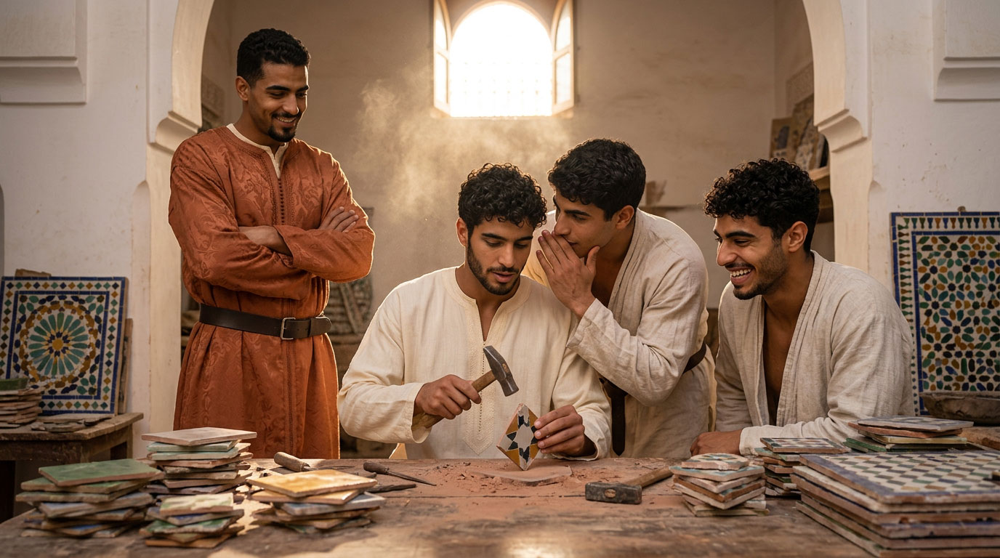
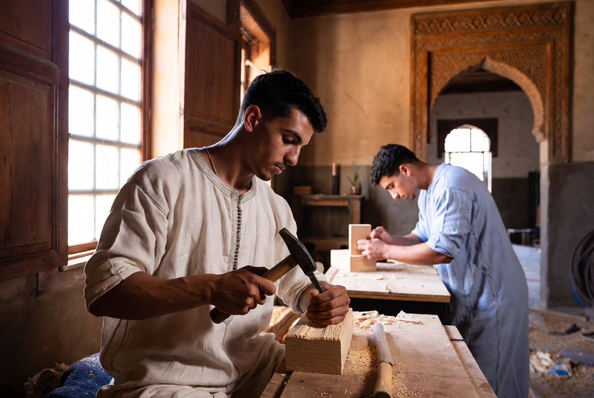
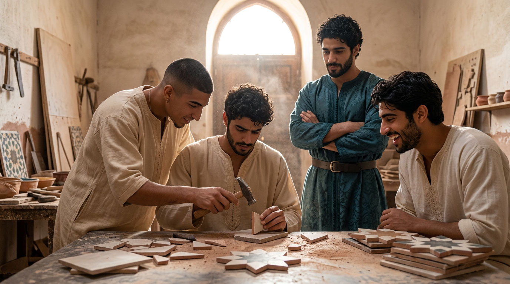

Outreach & partnerships
A house that learns does not close in on itself.

Dar al-Hiraf does not claim to reinvent the transmission of Fès's crafts. It takes its place within a movement already underway — schools, workshops, heritage preservation associations, Moroccan and international institutions — each working in its own way so that a skill does not die out for lack of hands to receive it. The house remains open to that collaboration.
FORMATION
A place of immersion
For young people already engaged in a technical curriculum, a craft learned within the rhythm of an entire life.
Read →WORKSHOP
Knowledge without a successor
For masters whose craft has found no heir, a living workshop and apprentices ready to receive it.
Read →CONTINUITY
One more craftsman
The man who leaves to found his own workshop is no loss: he is the culmination of transmission.
Read →WHAT THE HOUSE OFFERS
A place where technique can extend

Schools and vocational training centres give a technique; Dar al-Hiraf offers the time and the setting in which that technique can become a craft. For young people already engaged in such a curriculum, the house is a place of complete immersion — a craft learned not as an isolated skill, but within the rhythm of an entire life that gives it meaning.
THE MASTERS AND THEIR TOOLS
A knowledge in search of hands

For maalem whose knowledge has found no successor, the house can offer a living, equipped workshop, and apprentices ready to receive what, without this, would risk being lost. When a workshop closes for lack of a successor, it is not only a place that disappears: it is often tools, sometimes old ones, that can find a second life in hands trained to use them.
WHAT LEAVES THE HOUSE
To leave is not to break
For those who, after their formation at Dar al-Hiraf, choose to open their own workshop, the house does not regard this departure as a loss, but as the natural culmination of transmission — one more craftsman in the medina, trained, capable of standing on his own.
WITH WHOM
Our interlocutors
Schools and training centres
Technical curricula that find here a place to extend into duration and immersion.
Workshops and maalem of the medina
A knowledge without a successor, a house capable of receiving it and keeping it alive.
Local associations
Those already engaged in transmission to the younger generations.
Institutions
Moroccan and international, whose mission is to support traditional craftsmanship.
A POINT OF REFERENCE
For Fès as much as for the Riad
What Dar al-Hiraf seeks to become does not benefit the house alone. A school of crafts that trains, that gathers endangered knowledge, that gives rise to new independent craftsmen, contributes to what has given Fès its reputation for centuries — and it is in this spirit that the house wishes to build, over time, lasting ties with those who share this ambition.
Any school, workshop, association or institution interested in collaborating is invited to write to us.